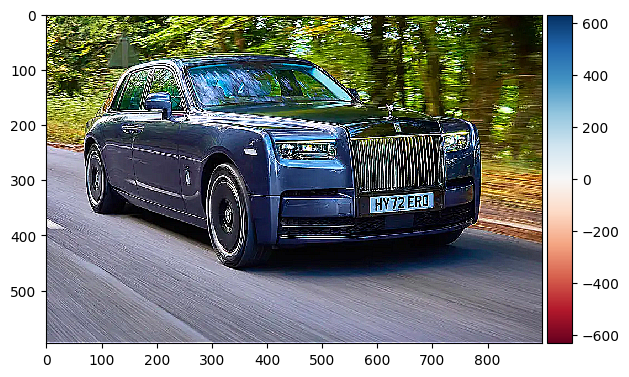
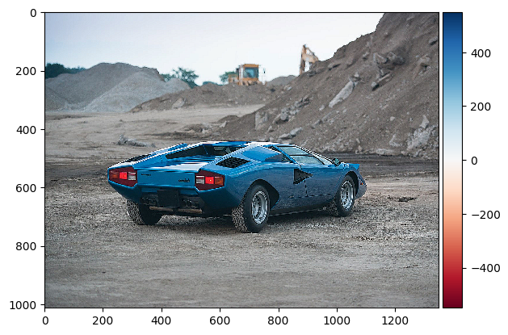
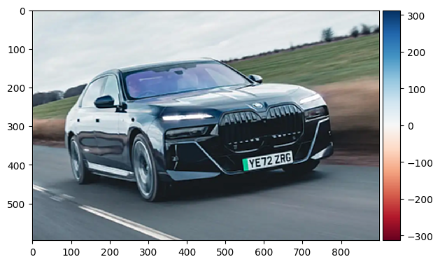

The gradient is a vector consisting of partial derivatives, we calculate the magnitude by
taking square root of the sum of the squared x partial derivative and squared y partial derivative. (since this is 2 dimension)
While a clear edge image could be shown, there are many gaps between the edge.
We could see that the edge is a lot smoother in the gradient image.
As a result, the edge image performs better (less gap in between) with curated threshold.
Also, we recognize that the edge image generated from
blurring the original then convolve is identical to the edge image genereated by
convolve the gaussian kernel then convolve, proving that convolution has same property as multiply.
Part 2: Fun with Frequencies!
Part 2.1: Image "Sharpening"
OriginalTaj without high freqthe high freqSharped Taj (blurred + 3 * high freq)
PhantomPhantom without high freqthe high freq

Sharped Phantom (blurred + 3 * high freq)
CountachCountach without high freq

Sharped Countach (blurred + 3 * high freq)
i7i7 without high freqSharped i7 (blurred + 3 * high freq)

Sharped i7 without high freqTwice Sharped i7 (blurred + 6 * high freq)
Compare the original and the sharpened images, we could see that the fine details
of each car is strengthened in sharpened images, those include the grill, vague shadow
of branches on glass,and small area reflection of protrude parts.
When sharpen the sharped already image of BMW i7, we could see that during the blur step
(Sharped i7 without high freq)
, the image resembles the original image. After the second sharpen is applied,
it seems like all the strokes on the car has been amplified, making it seem unreal.
Part 2.2: Hybrid Images
high freq inputlow freq inputresult
From the fourier transform above, we could see that the the filtered high freq input is
got strengthened for its non-vertial and non-horizontal frequencies, those are the detail on nutmeg's face,
the filtered low freq input is reduced to mostly horizontal and vertical, constructing the
basic structure of the hybrid image. The final hybrid image is just as we could predict from the
fourier analysis: the fine detail of nutmeg's face, its mustache and facial hair is prominant
when looked closely, and the underlying structure of Derek's face could be seen from afar.
high freq inputlow freq inputresult
This is the hybrid picture of two cars: ferrari laferrari and mclaren p1, I assume
this is a successful example as looking close we could see the high freq input clearly
(the ferrari) and barely sees the low freq input, and vice versa when look from afar.
I think this good hybrid is due to I chose two cars with similar structure (both are sport cars)
and they are of similar color (black glass, red-ish/black paint).
high freq inputlow freq inputresult
This is the hybrid picture of two emojis: eyeroll and tears of joy, I assume
this is a failed example as both of the high and low frequencies are present no matter
obversed from what distance. I think this is due to the big structural difference
between the two emojis, while the background is a big yellow circle, their eyes and
mouth vary vastly in color, shape and angle. The edges are also very abrupt in those two
emojis, making both emoji present even with filtering.
Part 2.3: Gaussian and Laplacian Stacks
Laplacian Stack DetailFinal result: oraple
Part 2.4: Multiresolution Blending
From the two car pictures aboveA circular mask
The car blending worked well. However, I couldn't find a way to do smooth mask for the ciruclar mask, hence the hand_nose blending
looks pretty bad with the circular seam at the middle.
Conclusion
From this project, we could see that multiresolution blending is quite a strong tool,
the final output image is almost flawless. The laplacian stack is good at hybriding two images,
which could be resonablely infered that it could be used to mix sounds. When detecting
gradients, applying a gaussian filter could significantly reduce the noise in final output.
Oversharpening an image does not make it clear, but makes it look unreal instead.


![Offset: r[90,22], g[40,16]](./2.2/DerekPicture.jpg)

![Offset: r[90,22], g[40,16]](./2.2/TearsofJoy.png)